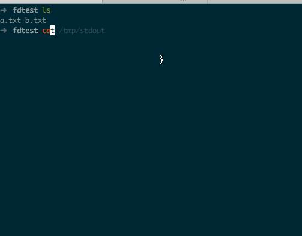

Bash 里的文件描述符
在 Shell 编程里经常会用到重定向操作, 它本质上是对文件描述符进行操作, 本文会对 Shell 脚本里的文件描述符做一个详细的介绍.
默认标准文件描述符
每个进程启动时默认都会有三个标准的文件描述符:
stdin0 号描述符, 代表输入设备, 进程从它读入数据;stdout1 号描述符, 进程往其中写入数据;stderr2 号描述符, 进程会往其中写入错误信息;
这三个描述符默认是对应同一个 tty 设备, 这样我们便可以在终端中输入数据和获取进程的输出.
默认的文件描述符也是可以被替换的, 例如我们可以替换掉 stdout 到一个文件, 这样命令的输出就不是打印到终端, 而是被输出到文件中:

在上面的 demo 中, 我们先是通过 exec 1 > /tmp/stdout 把 stdout 指向了文件 /tmp/stdout, 紧接着我们执行了两条命令 ls 和 pwd, 可以看到此时终端已经没有了命令的输出. 当我们通过 exec 1 >&2 恢复 stdout 后, 可以发现文件 /tmp/stdout 里存储了之前命令的输出.
其中 exec 是一个 bash 内置命令, 不同于在终端中执行命令时会 fork 一个子进程, 通过 exec 执行的命令会直接修改当前的 shell 进程, 可以通过它执行命令来修改当前 shell 的 context.
如果你想使坏的话可以在别人的 ~/.bashrc 里加入 exec 1 > /tmp/stdout, 这样新开的所有的终端窗口里都看不到命令的输出, 要是因此被打概不负责 :) .
文件描述符的操作
Shell 中对文件描述符的操作由三部分组成: (Left, Operation, Right):
- Left 可以是 0-9 的数字, 代表第 n 号文件描述符;
- Left 还可以为
&, 表示同时操作stdout和stderr
- Left 还可以为
- Right 可以是文件名或 0-9 的数字, 当 Right 是数字时必须要加上
&符号, 表示引用第 n 号文件描述符;- Right 还可以为
&-, 此时表示关闭 Left 描述符, 例如2<&-表示关闭 stderr;
- Right 还可以为
- Operation 可以为
<或>;- 为
<时表示以读模式复制 Right 到 Left, 此时如果没有指定 Left 的话, 则为默认值 0; - 当为
>表示以写模式复制 Right 到 Left, 此时如果没有指定 Left 的话, 则为默认值 1; - Operation 和 Left 之间不能有空格;
- 当 Right 为文件名时, Operation 和 Right 可以有空格, 否则也不能有空格;
- 为
当存在多个文件描述符的操作时, 会按照从左往右的顺序依次执行. 例如通过命令 cmd 3>&1 1>&2 2>&3 3>&- 就可以交换 stdin 和 stdout.
我们通过下面的例子来验证上面的文件描述符交换是否生效:
- 首先把默认的 stderr 重定向到文件
/tmp/stderr中, 这样在终端中就不会看到错误输出了; - 当交换完 stderr 和 stdout 后, 我们就可以在
/tmp/stderr文件中看到命令的正常输出了;
让我们来开始实验吧:
➜ test exec 2> /tmp/stderr |
和我们的预期时一致的!
一些示例
用文件重载 stdin :
➜ test cat 0< a.txt
hello
➜ test cat < a.txt # same with last command
hello把 stderr 和 stdout 都过滤掉
ls not_exist 1> /dev/zero 2>&1
# another way
ls not_exist &> /dev/zero处理上一个命令的错误输出:
➜ blog git:(hexo) ls not_exist 2>&1 | sed 's/not_exist/error/g'
ls: error: No such file or directory
# another way
➜ blog git:(hexo) ls not_exist |& sed 's/not_exist/error/g'
ls: error: No such file or directory把标准输出转入到错误输出上:
echo hello 1>&2
Process Substitution
在 bash 中提供了两个特殊的操作, 它们都可以被直接当成文件名使用:
<(cmd): 可以看作是一个可读文件,cmd命令的输出是这个文件的内容;>(cmd): 可以看作是一个可写文件,cmd会接受输入并进行处理;
示例
利用 <(cmd) 来验证一对公私钥是否匹配:
➜ blog git:(hexo) diff <(ssh-keygen -y -e -f ~/.ssh/id_rsa) <(ssh-keygen -y -e -f ~/.ssh/id_rsa.pub) |
利用 >(cmd) 来对错误信息进行处理, 同时保证错 stderr 信息不回变成 stdout:
➜ blog git:(hexo) ls not_exist 2> >(sed 's/not_exist/keep_error/g') |
References
- 本文链接：https://hiberabyss.github.io/2018/04/05/shell-file-description/
- 版权声明：本博客所有文章除特别声明外，均采用 CC BY-NC-SA 3.0 CN 许可协议。转载请注明出处！